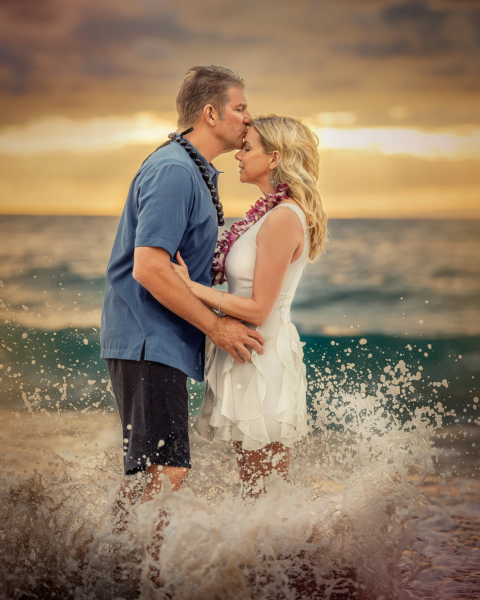

Tides & sunset times.
Check any date in Maui for tide highs and lows, plus sunrise and sunset — helpful for planning your session, or just your day at the beach.
What's the tide and golden light going to be on your special day?
Tide predictions reference NOAA's Kahului Harbor station — the official tide station for Maui. Actual timing along Wailea's south shore can vary slightly, but the pattern of highs and lows holds island-wide. All times shown in Hawaii Standard Time.
Low tide or high tide? Dress accordingly. High tide calls for higher hemlines — a shorter dress, or shorts instead of pants for the guys.
Sunset tells you when. Tide tells you where.
Most photographers only plan around sunrise and sunset. After thousands of Maui sessions, we've learned that tide matters just as much — it determines how much beach is exposed, how close the water sits to your backdrop, and whether tide pools or reef become part of the scene.
A low, receding tide opens up wide stretches of flat sand that are ideal for families with young kids to move and play. A higher tide brings the ocean right up to the shoreline, which we use deliberately for sessions like the Turquoise + Water Experience, where waves and reflections are part of the composition.

High tide creates motion.
When the water sits higher on the shoreline, every wave reaches farther into the scene. That can mean less room to stand — but it can also create photographs that feel alive.
This is why we do not treat the tide as a minor detail. In the right conditions, the splash, reflected light and movement of the ocean become part of the portrait itself.
What travelers ask before booking.
Why does tide matter for a beach photo session?
Tide changes how much sand, reef and tide pool are visible, and how close the water sits to your session's backdrop. Low tide exposes more sand for families to spread out on; high tide brings water closer for wave and water-based portraits.
Is low tide or high tide better for family beach photos?
It depends on the session. Low tide is often best for walking, playing and exploring exposed sand or tide pools. High tide works well for dramatic wave backdrops and our Turquoise + Water Experience session.
Do you schedule sessions around the tide as well as the sun?
Yes. For water-based sessions especially, we consider both tide level and sun position when recommending a time and location, rather than relying on sunset time alone.
Where does your tide data come from?
Our tool references NOAA's Kahului Harbor station, the official tide station for Maui. Timing along Wailea's south shore can vary slightly, but the pattern of highs and lows holds true island-wide.
What if the tide isn't ideal on my travel dates?
Almost any tide can work with the right beach and session type. If your dates line up with a less-than-ideal tide at one location, we'll recommend a beach or session style that suits the conditions.